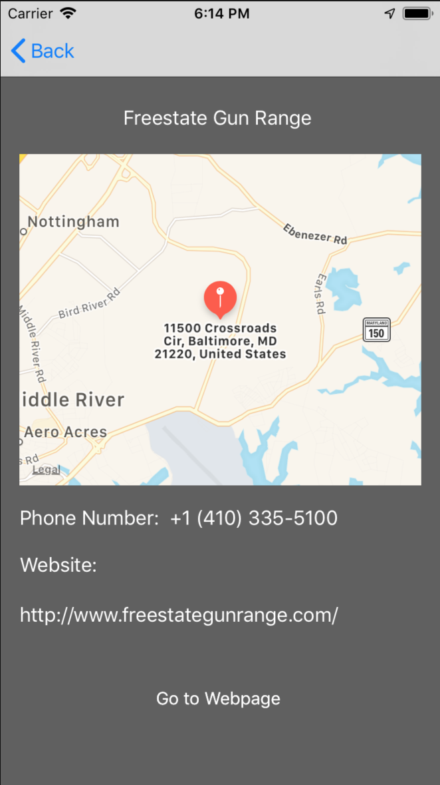
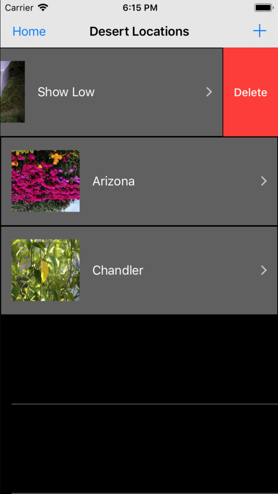
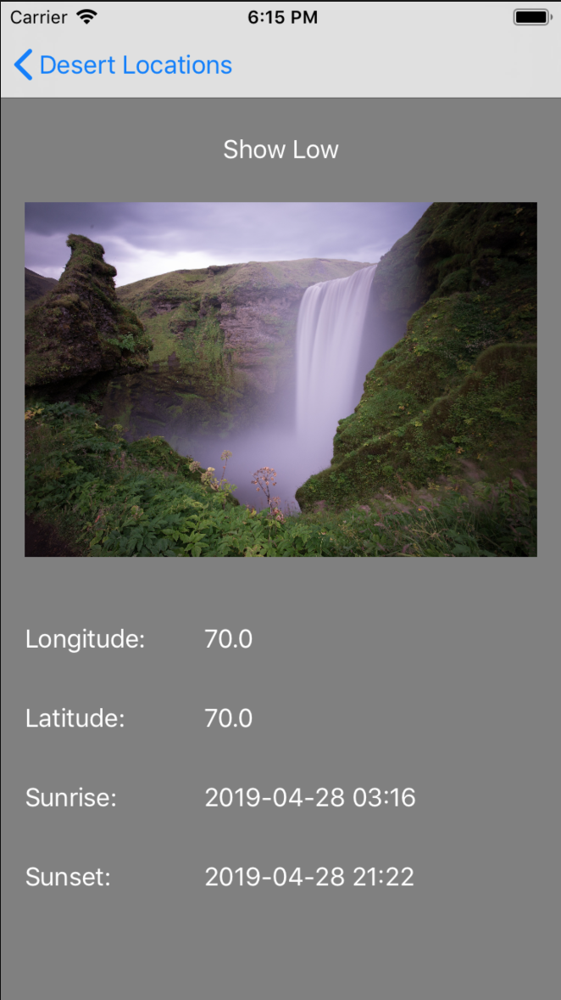

I am an Arizona State University Graduate with a Bachelor's in Computer Science. I have been fascinated by technology all my life, and started my journey with coding in early High School. Always having leaned more towards the logical side of things, I say I have found my home in coding.
Projects
1 / 8

Login
2 / 8

Main
3 / 8

Search Options
4 / 8

Greenhouse List
5 / 8

Plant List
6 / 8

Selected Plant
7 / 8

Create Plant
8 / 8

Signup
❮
❯
PPF Plant Tracker
- Developed an Android application using Java to manage inventory for a dispensary.
- Implements all standard CRUD (Create, Read, Update, Delete) functionality for the plants.
- Utilizes MVC (Model, View, Controller) Architecture to promote easier scalability to the app.
- Added security using Firebase Admin SDK to assign roles (Manager, Employee, etc.) to individual users with custom claims.
- Firebase Authentication used for further security allowing for only employee accounts to login to the app.
- Diverse search functionality to aid in finding plants easier (Either QR Code search or sorted list of plants).
- Makes use of the Firebase Realtime Database for quick information storing/retrieval.
3 / 5

Selected Range Info
3 / 5

Saved Locations
3 / 5

Saved Location Info
❮
❯
Shooting Range Locator
- Developed an IOS application in Swift in order to retrieve relevant data about shooting ranges closest to a device's location.
- Adapted the MapKit framework to allow for the closest locations to be displayed on a map view.
- Compiled closest shooting range locations into a list view to display relevant information regarding each range.
- Implemented the addition of stored shooting locations based on coordinates entered by the user.
- Constructed functionality to allow for pictures to be saved for each user defined location.
- Integrated a weather API to allow the user to check the forecast for a specified location.
- Applied the MVC (Model, View, Controller) Architecture and followed traditional mobile development conventions.
- Tested the application to ensure correct locations were being found/displayed.
- Documented the project idea, capabilities, limitations, and flow of the application.